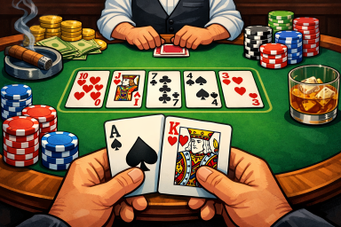

Brute Force
Trying all possibilities.
1. Nested Loops
In some problems, trying all possibilities simply boils down to considering all paris, or triples, or any fixed-size tuples. Such problems can often be solved by using nested loops.
Image credit: ChatGPT Consider the following example of the poker variant Texas hold 'em. Each player holds two private cards in their hands while all players share five public cards laid out on the table. The strength of your hand is determined by the five strongest cards among your private and the public cards put together; the strongest hand wins the round. To estimate how strong you can expect your hand to be against the hands of your opponents, you could simply enumerate all possible remaining hands, and count how many of those you would beat. Since any hand is completely determined by the two private cards, having two nested loops suffices to consider all possible hands of your opponents.
cards = {'AH', '2H', '3H', ...}
public_cards = {'TH', 'JH', '7C', '4S', '3H'}
private_cards = {'AS', 'KH'}
remaining_cards = cards - public_cards - private_cards
win, lose = 0, 0
for card1 in remaining_cards:
for card2 in remaining_cards:
# Test if private_cards beats (card1, card2) and if so,
# increase win by 1; otherwise, increase lose by 1. #
# Report the strength of your hand by comparing
# the values of win and lose. #
In another poker variant, five-card draw, you get all five cards on your hand. To determine how strong your hand is against the other hands, you now have to enumerate all 5-tuples of remaining cards which can be done with five nested loops.
cards = {'AH', '2H', '3H', ...}
private_cards = {'TH', 'JH', '7C', '4S', '3H'}
remaining_cards = cards - private_cards
win, lose = 0, 0
for card1 in remaining_cards:
for card2 in remaining_cards:
for card3 in remaining_cards:
for card4 in remaining_cards:
for card5 in remaining_cards:
# Test if private_cards beats (card1, card2, card3, card4, card5)
# and if so, increase win by 1; otherwise, increase lose by 1. #
# Report the strength of your hand by comparing
# the values of win and lose. #
Running Time. Note that as the number of nestings increases, the run time of your program quickly gets prohibitively slow. If you have $k$ nested loops each going over $n$ items, this this yields a running time of (at least) $O(n^k)$. The following gives you a rough idea how large $n$ can be for given nesting-depths of loops when you have a run time limit of 1 second. Note that determining the strength of your hand in five-card draw power is probably not feasible within this limit: One deck has 52 cards, so $n = 52 - 5 = 47$, while the limit lies around 40.
| Nested loops ($k$) | 1 | 2 | 3 | 4 | 5 | 6 |
| $n \le \ldots$ | 100M | 10K | 450 | 100 | 40 | [10..11] |
Practice problems: nested-loops
2. Subsets
To continue the example from above, we can enumerate all pairs of cards
and all 5-tuples of cards as
size-2 and size-5 subset of the available cards, respectively.
The itertools-package which is part of
python's standard distribution provides a method,
combinations(collection, k),
that lets you do just that.
Here, collection is the ground set (the deck of cards),
and k is the size of the subsets you want to consider.
from itertools import combinations
remaining_cards = ...
# For Texas Hold 'Em
for pair in combinations(remaining_cards, 2):
# Compare the pair against your own
# For Five-Card Draw
for hand in combinations(remaining_cards, 5):
# Compare the hand against your own
This looks much more concise than the approach with nested loops.
Keep in mind though that nested loops can be more versatile:
each of the loops may iterate over another set, while
here all elements come from the same set.
(For an itertools-based solution
for such scenarios, check out the
product-function
which lets you iterate over Cartesian products.)
If we want to iterate over all subsets of cards, regardless of their size, we can do it like so: we first iterate over all subset sizes and then over all subsets of that size.
from itertools import combinations
cards = ...
for k in range(len(cards)+1):
for s in combinations(cards, k):
# ...
Running time. For enumerating subsets of fixed size, we can essentially consult the table regarding nested loops with the size of the subset taking the role of the nesting-depth. When enumerating all subsets of a set of size $n$, we have to consider $2^n$ choices. How big the input can get depends on what we do with each set.
| Running time per subset | $O(1)$ | $O(n)$ | $O(n^2)$ |
| $n \le \ldots$ | [24..26] | [18..22] | [17..19] |
Note that we can use bitmasks
to get a substantial performance advantage over enumerating
all subsets using itertools.
For many brute-force problems using subsets, this is in fact necessary.
Practice problems: subset
3. Permutations
Consider another, made-up card game. You have a number of cards on your hand, and accumulate points as you play them, one at a time. The effect on your score depends on the card you play and the one you played in the step before. For intance, playing card B after card A (move A $\to$ B) increases your current score by 10, while playing C after A doubles it, etc.
| Move | A $\to$ B | A $\to$ C | B $\to$ C | D $\to$ B | D $\to$ C | ... |
| Effect | +10 | x2 | -12 | /3 | +8 | ... |
The itertools-package has a function
permutations(collection)
which enumerates all permutations of the elements in
collection.
We could find the optimal strategy for the above card game as follows:
from itertools import permutations
from math import inf
cards = {'A', 'B', 'C', 'D', 'E'}
topScore = -inf
for p in permutations(cards):
score = 0
for c in p:
# Update score according to
# the effect of the card c.
topScore = max(topScore, score)
print(topScore)
Running time. There are even more permutations of an $n$-element set than there are subsets, namely $n! = n\cdot(n-1)\cdot(n-2)\cdots 1$. In a 1-second running time limit, you should expect to be able to try all permutations of sets of size up to 10 or 11, but not more.
Practice problems: permutation
4. Bitmasks
When dealing with a large number of sets, it becomes crucial to perform basic operations such as unions and intersections as efficiently as possible. Bitmasks are a powerful tool to achieve that.
Representation.
Consider an integer whose binary representation uses 8 bits,
say 154 = (10011010)2:
$$0\cdot 2^0 + 1\cdot 2^1 + 0\cdot 2^2 + 1\cdot 2^3 + 1\cdot 2^4 + 0\cdot 2^5 + 0\cdot 2^6 + 1\cdot 2^7
= 2 + 8 + 16 + 128 = 154$$
We can view this binary representation as an indicator vector of an ordered
8-element ground set, say
(A, B, C, D, E, F, G, H).
For instance, the first (rightmost) bit being set to 0 indicates that the
first element A is not part of the subset,
while the second bit being set to 1 indicates that B is contained in it,
and so on.
This way, the number 154 represents the subset {B, D, E, H}
in this context.
Obs:
A bitmask effectively is a subset of indices rather than a subset of elements
of a ground set, so when working with bitmasks, it is important that you fix an
(arbitrary) ordering on the ground set first.
Basic Operations.
Suppose you have two bitmasks S and T
representing two subsets of
(A, B, C, D, E, F, G, H).
To compute the union of S and T, $S \cup T$,
we use the bit-wise OR, in code
S | T:
The $i$-th element is contained in $S \cup T$ if and only if
the $i$-th bit of S or the $i$-th bit of T is set to 1 (or both).
10011010 (represents {B, D, E, H})
| 00101110 (represents {B, C, D, F})
------------------------------------------
10111110 (represents {B, C, D, E, F, H})
To compute the intersection of S and T, $S \cap T$,
we use the bit-wise AND, in code
S & T:
The $i$-th element is contained in $S \cap T$ if and only if
the $i$-th bit of S and the $i$-th bit of T is set to 1.
10011010 (represents {B, D, E, H})
& 00101110 (represents {B, C, D, F})
------------------------------------
00001010 (represents {B, D})
To compute the difference $S \setminus T$,
we implement the bit-wise AND NOT, in code
S &~ T:
The $i$-th element is in $S \setminus T$
if the $i$-th bit of S is 1 and the $i$-th bit of T is 0.
(For if the $i$-th bit of T was 1, the $i$-th element would be
removed when subtracting $T$ from $S$.)
10011010 (represents {B, D, E, H})
&~ 00101110 (represents {B, C, D, F})
-------------------------------------
10010000 (represents {E, H})
| Operation | \(S \cup T\) (union) | $S \cap T$ (intersection) | $S \setminus T$ (difference) | $S \subseteq T$ (subset) |
| Bit-wise instruction | S | T |
S & T |
S &~ T |
S & T == S |
Enumerating all subsets (bitmasks).
Bitmasks give us a direct way to enumerate all subsets of an $n$-element set;
in particular, we can loop over all numbers from 0 to $2^n-1$,
in bitmask terms this means going from
000...0 (the empty set) to
111...1 (the entire ground set).
for bm in range(2**n):
# Do something with the bitmask bm.
Efficiency/When to use.
What makes bitmasks so much more efficient than regular (python) sets?
The crux is that if we use bitmasks that fit in a 32- or 64-bit number
(depending on the system architecture),
then a basic operation involving two bitmasks can be performed as efficiently
as a simple arithmetic operation on small integers (addition, subtraction, etc),
which we can view as a constant-time operation.
If we worked with regular sets, then the running time of such operations
would depend on the size of the sets, and be much slower in general.
Since python supports arbitrary-size integers, bitmasks can in fact be used to
represent much larger sets, but the gain in performance vanishes as the sets
become too large.
As a rule of thumb, using bitmasks on a ground set with up to 31 elements
is always a good idea. After that, you may have to consider other factors.
Practice problems: bitmask